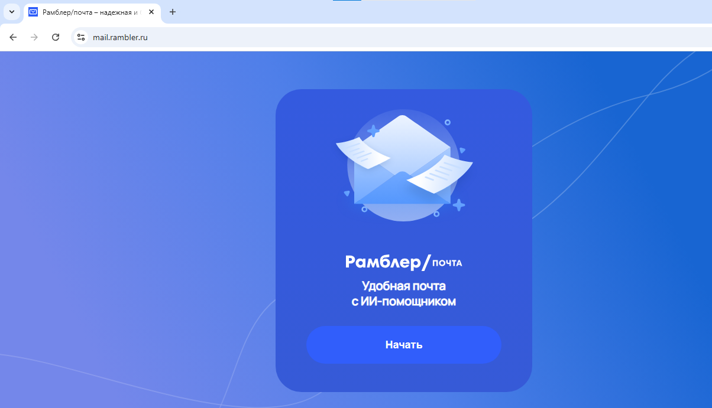
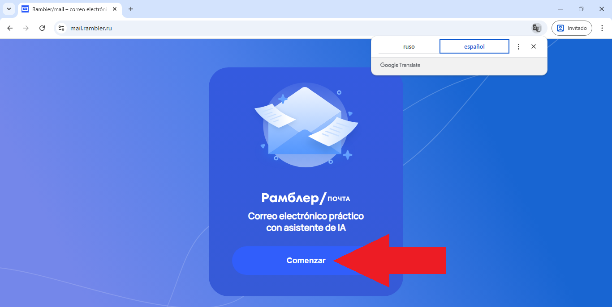
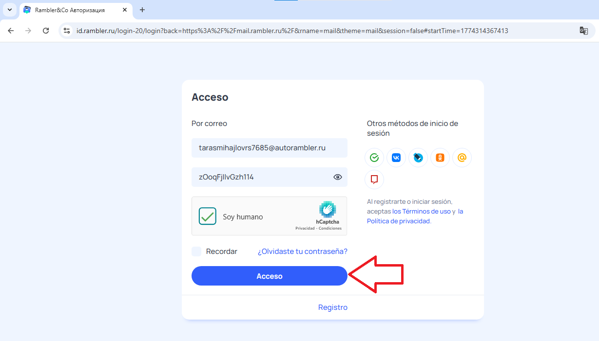
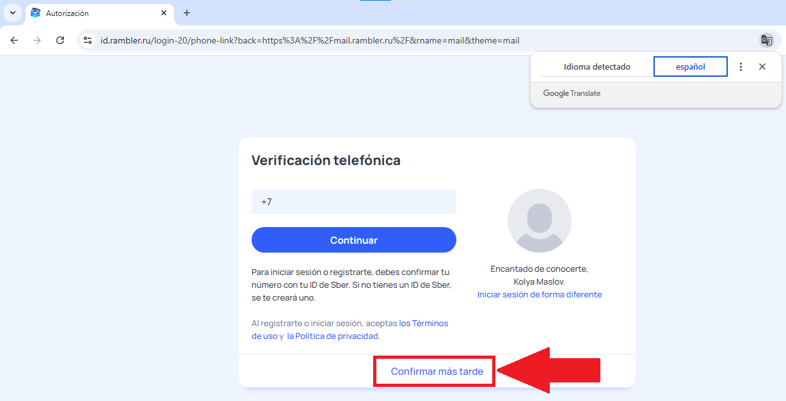
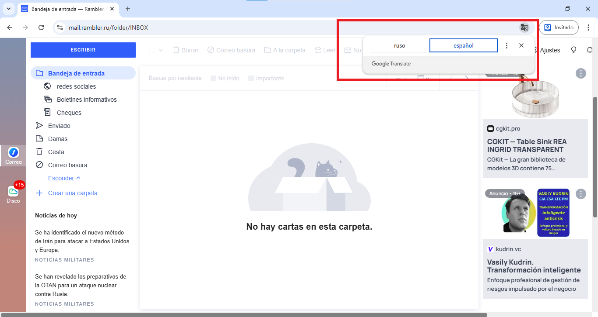

Bienvenido a su Guía de Acceso
Esta guía detallada le indicará, paso a paso, cómo ingresar y gestionar su nueva cuenta de correo electrónico puente. Este correo es necesario para la administración de seguridad de su cuenta VIP.
Acceso al Portal Oficial
Abra su navegador web de preferencia en su computadora de escritorio.
Haga clic en el siguiente enlace oficial para abrir el portal de acceso al correo:
https://mail.rambler.ru/Al cargar la página, visualizará la pantalla de inicio de sesión en idioma ruso. Señalamos con recuadros rojos dónde se ingresarán sus credenciales más adelante.

Traducción de la Página al Español
Paso fundamental para que su pantalla coincida con el resto de este tutorial.
Casi todos los navegadores modernos (Chrome, Edge) ofrecen esta función. Siga estos pasos sobre la página de inicio:
- Clic Derecho: Haga clic con el botón derecho del ratón en cualquier espacio en blanco de la página.
- Seleccionar Traducir: En el menú que aparece, busque y seleccione la opción "Traducir al español".

Ingreso de Credenciales y Verificación
Coloque los datos proporcionados para acceder a su bandeja.
Con la página ya traducida al español, siga estos 3 pasos en el formulario central:
- Correo y Contraseña: Ingrese el correo electrónico y la contraseña exacta que le hemos proporcionado en su compra.
- Verificación de Seguridad: Marque la casilla que dice "Soy humano" y resuelva el pequeño rompecabezas visual si el sistema se lo solicita.
- Botón de Acceso: Haga clic en el botón azul de "Acceso".

Omitir Verificación de Teléfono ¡Muy Importante!
No es obligatorio ingresar datos personales en este paso.
Nota: Gracias a que mantenemos el traductor activo, los botones de la siguiente pantalla de seguridad aparecerán en español, tal como se muestra en la imagen.
Tras presionar "Acceso", el sistema lo llevará a una pantalla de verificación de seguridad que solicita un número de teléfono. Este paso NO es obligatorio. Siga esta instrucción vital:
- Seleccione "Confirmar más tarde": Ignore la casilla de teléfono y busque en la parte inferior de la pantalla el texto traducido que dice "Confirmar más tarde". Haga clic sobre él.

Administración Completa de la Bandeja de Entrada
Acceso final a su panel de gestión de correos electrónicos.
¡Felicidades! Al completar los pasos anteriores, usted ha saltado los controles de seguridad y se encuentra oficialmente dentro de su bandeja de entrada de correo puente.
Como se muestra en la captura de pantalla a continuación, mantenemos el traductor nativo del navegador activado para facilitar la lectura. Nota: Si al llegar a esta página nota que el traductor se desactiva automáticamente, simplemente repita el **Paso 02** para recuperar la interfaz en su idioma.
